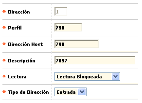

Puertos
Direcciones por puerto: Esta función hace posible definir la conexión lógica entre el sistema operativo central y el enrutador (switch).
El formulario contiene los enlaces: Actualizar, Eliminar y Adicionar. Adicionalmente, cuenta con un botón en la parte superior para ir a la opción anterior: Puertos.
Adicionar: Si el usuario invoca la opción Adicionar se despliega un formulario con los siguientes campos:
| Marca | Campo obligatorio que posee lista de valores poblada mediante la opción Franquicias del Núcleo. |
|
Dirección |
Campo numérico de 2 posiciones, obligatorio, que contiene la dirección de la unidad lógica (combinación de caracteres) con la cual se identificará el equipo de la entidad para que se comunique con el autorizador durante el proceso de autorizaciones. |
|
Perfil |
Este campo es complementario del anterior y en él se determina el perfil o rasgo del puerto. |
|
Dirección host |
Contiene el número de puerto al cual se asociará su dirección lógica. |
|
Descripción |
Este campo contiene el nombre del puerto que se está definiendo. |
|
Lectura |
Campo con lista de valores de la que se debe seleccionar si el puerto que se está definiendo permite lectura bloqueante ó lectura no bloqueante |
|
Tipo de dirección |
Este campo indica el esquema entrada/salida que es permitido en la conexión lógica. |
Actualizar: Al activar ese enlace se despliega un formulario en el cual los únicos campos modificables son: Perfil, Dirección host, Descripción, Lectura, y Tipo de dirección.

Puertos | Validaciones por puerto | Límite de autorizaciones | Límite de autorizaciones ContacLess | Parámetros valida existencia autorización | Límite de autorizaciones ContacLess